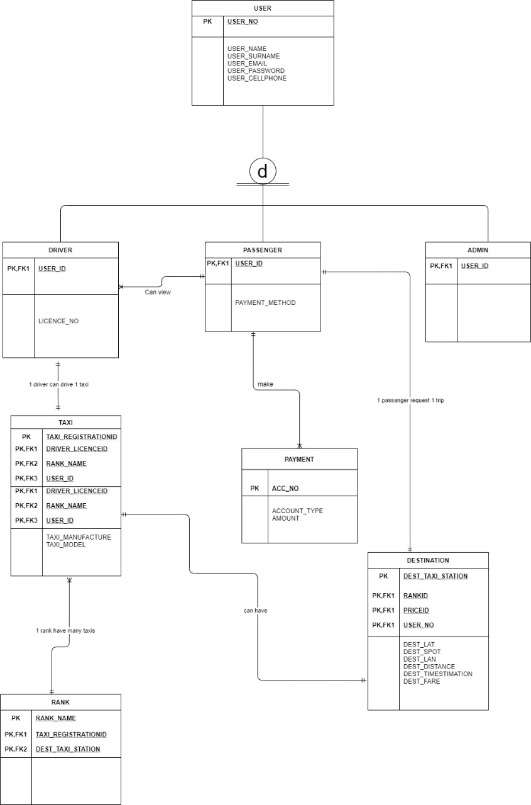

PROJECT 1
iFindTaxi System
GROUP : K SUBJECT: DSO34BT YEAR : 2022 SYSTEM PROPOSAL NAME IFindTaxi System.PROBLEM STATEMENT
The current situation is that when people want to go somewhere they need transport, most people use taxis. The issue is normally overload, change when people have paid and time waisted when the driver takes different routes searching for other people. Each request made with a smart device leads to an early transport, correct route at the right time and no payment issues.OBECTIVE USERS OF THE SYSTEM
IFindTaxi System is a project is aimed at assisting passengers with finding taxi ranks and taxis to their respective desired destination. With just the click of finger any individual can access the software before they can travel to find the nearest taxi rank to wherever they want to go, prices are even displayed in respective of where one want to travel to. Firstly, a passenger will through the software in a taxi rank search to wherever they want to go after finding the nearest taxi rank to an extent of finding where the taxi is located inside the taxi rank line, and they can even pay through the software. It includes taxi drivers too as they play a role of registering their taxi credentials in the system and activating a taxi when it is their turn to commute passengers, so that a passenger can see an active taxi inside the IFindTaxi software as explained above. The primary objective of is for a IFindTaxi passenger to identify the spot of their destination where they want to be dropped off in line with a registered route taxis uses regularly, because in most cases people struggle with drop off spot due to communication misunderstandings of a taxi driver and a passenger.
TOOLS AND TECHNOLOGIES:
• HTML, CSS, and JavaScript
• Python
• Heroko- MySQL administration tool
• Google Maps API
• pgAdmin -Admistration
• Django
Users of the system:
− Passenger
− Taxi driver
− Administrators
- Taxi Association
SCOPE
The system’s primary end-users are the passengers and the drivers.
ERD

4. Gantt Chart
Project name: iFindTaxi System
Description:
• Start date:Wednesday, July 27, 2022
• End date: Thursday, November 24,2022
• Project length: 5 Months
NON-FUNCTIONAL REQUIREMENTS:
• Security – access control through authentication and authorization measures
• Reliability – the system is available 24/7
• Performance – the system can handle multiple users at the same time
• Usability – the user interface responds seamlessly on desktop and mobile device
DATABASE SCRIPTS
-- Database: autotaxi
-- DROP DATABASE IF EXISTS autotaxi;
CREATE DATABASE autotaxi
WITH
OWNER = postgres
ENCODING = 'UTF8'
LC_COLLATE = 'C'
LC_CTYPE = 'C'
TABLESPACE = pg_default
CONNECTION LIMIT = -1
IS_TEMPLATE = False;
from django.db import models
from django.contrib.auth.models import User
# Create your models here.
class Passanger(models.Model):
user = models.OneToOneField(User,on_delete=models.CASCADE,related_name="passenger")
pass_cellphone = models.CharField(max_length=200)
dest_spot = models.CharField(max_length=200)
card_number = models.CharField(max_length=200)
payment_method = models.CharField(max_length=200)
def _str_(self) -> str:
return self.user.username + '|' + self.user.first_name
class Driver(models.Model):
user = models.OneToOneField(User,on_delete=models.CASCADE,related_name="driver")
driver_registrationID = models.CharField(max_length=30)
driver_cellphone = models.CharField(max_length=200)
driver_homeaddress = models.CharField(max_length=200)
driver_face_card = models.ImageField(upload_to='images/', default='pic_folder/None/no-img.png', verbose_name='face-pic')
class Taxi(models.Model):
registration = models.CharField(max_length=200)
manufature = models.CharField(max_length=200)
model = models.CharField(max_length=200)
driver = models.ForeignKey(Driver,on_delete=models.CASCADE)
def _str_(self) -> str:
return self.manufature + '-' + self.model
class Destination(models.Model):
name = models.CharField(max_length=200)
lat = models.FloatField()
lan = models.FloatField()
def _str_(self) -> str:
return self.name
class RankingTaxis(models.Model):
taxi = models.ForeignKey(Taxi,on_delete=models.CASCADE)
destination = models.ForeignKey(Destination,on_delete=models.CASCADE)
main_position = models.CharField(max_length=20)
second_position = models.CharField(max_length=20)
price = models.DecimalField(decimal_places=2,max_digits=5)
def _str_(self) -> str:
return self.taxi.model + ' >> ' + self.destination.name
class Rank(models.Model):
name = models.CharField(max_length=200)
location = models.CharField(max_length = 200)
ranking_taxis = models.ManyToManyField(RankingTaxis)
def _str_(self) -> str:
return self.name
class TaxiStatus(models.Model):
taxi = models.OneToOneField(Taxi, on_delete=models.CASCADE)
is_active = models.BooleanField(default=False)
is_loading = models.BooleanField(default=False)
NETWORK SITES
Facebook: https://www.facebook.com/profile.php?id=100087900197138&mibextid=LQQJ4d
Instagram: https://instagram.com/find_taxi22?igshid=YmMyMTA2M2Y=
HOW TO REGISTER A DRIVER.
Step 1: Click on “Sign up as Driver” as shown by the arrow on the image below.
Step 2: Fill in all the details required.
Step 3: Click “sign up” to successfully create your account as a driver.
Step 4: Check the “remember me box” to save your passwords for next time log in
Step 5: Pop up messages will appear to show you have successfully created an account with us a driver.
Step 6: click “confirm” to continue to log in as a successfully registered driver.
Step 7: click “Log in” And use your details to continue.
Step 8: Add the details of your taxi Click the button “Add taxi” if you haven’t added your taxi
This is the admin side of the system the admin will register the taxi ranks.
credentials are :
username=Seru
password=alfa1234
https://ifindtaxi.herokuapp.com/admin/taxi/rank/add/
This is the interface of the system
https://findtaxi.co.za/findtaxi.co.za
This is the database we used heroku to host our database
https://data.heroku.com/data.heroku.com/dataclips/dkjwukukozzrcsxmvivchniuzuzt
PROJECT 2
I created a challege for the students in a module of DSO23AT November-2022 for them to get 80% i was their Tutor and above in the module
not only did the students pass,most students got a distinction in the test
I believe in ubuntu and a hand that gives is a hand that receives
.png)
.png)
.png)
ABOUT ME
“I matriculated with my barchelor in science 3 years
ago. I chose that field of study because I’ve always been interested in science,mathematics and CAT and a couple of family members
told me it leads to great career options, too. I REALLY want work with your firm. This internship seems like a great opportunity to advance skills , and continue
buil a career and challenging myself”.
Its really an honour that you visited my website
− Passenger
− Taxi driver
− Administrators
- Taxi Association
SCOPE The system’s primary end-users are the passengers and the drivers.
ERD
NON-FUNCTIONAL REQUIREMENTS: • Security – access control through authentication and authorization measures • Reliability – the system is available 24/7 • Performance – the system can handle multiple users at the same time • Usability – the user interface responds seamlessly on desktop and mobile device
DATABASE SCRIPTS
-- Database: autotaxi-- DROP DATABASE IF EXISTS autotaxi;
CREATE DATABASE autotaxi
WITH OWNER = postgres ENCODING = 'UTF8' LC_COLLATE = 'C' LC_CTYPE = 'C' TABLESPACE = pg_default CONNECTION LIMIT = -1 IS_TEMPLATE = False; from django.db import models from django.contrib.auth.models import User # Create your models here. class Passanger(models.Model): user = models.OneToOneField(User,on_delete=models.CASCADE,related_name="passenger") pass_cellphone = models.CharField(max_length=200) dest_spot = models.CharField(max_length=200) card_number = models.CharField(max_length=200) payment_method = models.CharField(max_length=200) def _str_(self) -> str: return self.user.username + '|' + self.user.first_name class Driver(models.Model): user = models.OneToOneField(User,on_delete=models.CASCADE,related_name="driver") driver_registrationID = models.CharField(max_length=30) driver_cellphone = models.CharField(max_length=200) driver_homeaddress = models.CharField(max_length=200) driver_face_card = models.ImageField(upload_to='images/', default='pic_folder/None/no-img.png', verbose_name='face-pic') class Taxi(models.Model): registration = models.CharField(max_length=200) manufature = models.CharField(max_length=200) model = models.CharField(max_length=200) driver = models.ForeignKey(Driver,on_delete=models.CASCADE) def _str_(self) -> str: return self.manufature + '-' + self.model class Destination(models.Model): name = models.CharField(max_length=200) lat = models.FloatField() lan = models.FloatField() def _str_(self) -> str: return self.name class RankingTaxis(models.Model): taxi = models.ForeignKey(Taxi,on_delete=models.CASCADE) destination = models.ForeignKey(Destination,on_delete=models.CASCADE) main_position = models.CharField(max_length=20) second_position = models.CharField(max_length=20) price = models.DecimalField(decimal_places=2,max_digits=5) def _str_(self) -> str: return self.taxi.model + ' >> ' + self.destination.name class Rank(models.Model): name = models.CharField(max_length=200) location = models.CharField(max_length = 200) ranking_taxis = models.ManyToManyField(RankingTaxis) def _str_(self) -> str: return self.name class TaxiStatus(models.Model): taxi = models.OneToOneField(Taxi, on_delete=models.CASCADE) is_active = models.BooleanField(default=False) is_loading = models.BooleanField(default=False)NETWORK SITES
Facebook: https://www.facebook.com/profile.php?id=100087900197138&mibextid=LQQJ4d
Instagram: https://instagram.com/find_taxi22?igshid=YmMyMTA2M2Y=
HOW TO REGISTER A DRIVER. Step 1: Click on “Sign up as Driver” as shown by the arrow on the image below. Step 2: Fill in all the details required. Step 3: Click “sign up” to successfully create your account as a driver. Step 4: Check the “remember me box” to save your passwords for next time log in Step 5: Pop up messages will appear to show you have successfully created an account with us a driver. Step 6: click “confirm” to continue to log in as a successfully registered driver. Step 7: click “Log in” And use your details to continue. Step 8: Add the details of your taxi Click the button “Add taxi” if you haven’t added your taxi
This is the admin side of the system the admin will register the taxi ranks.
credentials are : username=Seru password=alfa1234https://ifindtaxi.herokuapp.com/admin/taxi/rank/add/
This is the interface of the systemhttps://findtaxi.co.za/findtaxi.co.za
This is the database we used heroku to host our databasehttps://data.heroku.com/data.heroku.com/dataclips/dkjwukukozzrcsxmvivchniuzuzt
PROJECT 2
I created a challege for the students in a module of DSO23AT November-2022 for them to get 80% i was their Tutor and above in the module not only did the students pass,most students got a distinction in the test I believe in ubuntu and a hand that gives is a hand that receives
ABOUT ME
“I matriculated with my barchelor in science 3 years
ago. I chose that field of study because I’ve always been interested in science,mathematics and CAT and a couple of family members
told me it leads to great career options, too. I REALLY want work with your firm. This internship seems like a great opportunity to advance skills , and continue
buil a career and challenging myself”.